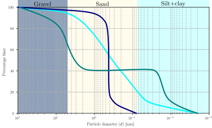

Recap
- We learned how to calculate the bulk, dry, saturated, and buoyant unit weight of soil.
- We learned how to calculate water content and degree of saturation.
-
We learned how to calculate void ratio and porosity.
Contents
- Sieve and hydrometer analysis.
- Soil fractions
- Clay mineralogy
- Grain size metrics
- Gradation coefficients
Objectives covered in this lecture
- [O1]: Develop an understanding of soil phase relations, index properties, and their application to soil classification and compaction.
After this lecture we will able to:
- Plot a grain size distribution curve.
- Determine the fractions of soil according to grain size.
- Determine particle sizes and the gradation coefficients.
Particle grain size

Particles can be smaller than 2 \(\mu\)m or larger than 2m.
Sieve analysis (ASTM D6913)

| U.S. Standard | Sieve Opening |
| Sieve No. | (mm) |
| 4 | 4.75 |
| 10 | 2 |
| 20 | 0.85 |
| 40 | 0.425 |
| 60 | 0.25 |
| 100 | 0.15 |
| 140 | 0.106 |
| 200 | 0.075 |
Quiz 2.3
- Coarse grained
- Clay
- Silt
- Fine grained
- Gravel
Sieve analysis (ASTM D6913)
Note that the total dry weight of the sample is \(W_{td}=\sum_{i=1}^{n_s}W_i\), where \(n_s\) is the total number of sieves used.
Sieve analysis (ASTM D6913)
Soil fractions
\(S_F=100-G_F-F_F\)
Example 2.6
| Sieve Opening | Weight | Retained | Passing |
| (mm) | (g) | (%) | (%) |
| 4.75 | 12.5 | ||
| 2 | 233.67 | ||
| 0.85 | 144.13 | ||
| 0.425 | 75.75 | ||
| 0.25 | 25.47 | ||
| 0.15 | 10.14 | ||
| 0.106 | 5.5 | ||
| 0.075 | 1.7 | ||
| Pan | 1 | ||
| Total | 509.86 |

Hydrometer analysis
- Segregation of particles by sedimentation (Stokes law).
- Relative density of suspended flow is measured in time to determine particle diameter.
- Has several limitations due to unrealistic assumptions.

Example 2.7
Sieve analysis
| Sieve Opening | Weight | Retained | Passing |
| (mm) | (g) | (%) | (%) |
| 4.75 | 0 | 0.0% | 100.0% |
| 2 | 12.12 | 3.6% | 96.4% |
| 0.85 | 25.36 | 11.2% | 88.8% |
| 0.425 | 32.15 | 20.8% | 79.2% |
| 0.25 | 33.14 | 30.7% | 69.3% |
| 0.15 | 33.78 | 40.8% | 59.2% |
| 0.106 | 47.56 | 55.0% | 45.0% |
| 0.075 | 50.14 | 70.0% | 30.0% |
| Pan | 100.25 | 100.0% | 0.0% |
| Total | 334.5 |
Hydrometer analysis
| Part. Diameter | Percentage Finer |
| (mm) | % |
| 0.066 | 85% |
| 0.045 | 74% |
| 0.036 | 68% |
| 0.025 | 58% |
| 0.015 | 48% |
| 0.011 | 42% |
| 0.007 | 35% |
| 0.005 | 28% |
| 0.004 | 24% |
| 0.003 | 20% |
| 0.0018 | 16% |
| 0.0012 | 12% |

\(P_{p,hc} \equiv\) corrected percent passing (hydrometer analysis).
\(P_{p,h} \equiv\) uncorrected percent passing (hydrometer analysis).
\(P_{200} \equiv\) percent passing for the sieve analysis at No 200.
Sample calculation:
\( \begin{align}
P_{p,hc} &= 85\% \times 30.0\% = 25.5\% & \text{For } d=0.066 \text{mm}\\
P_{p,hc} &= 74\% \times 30.0\% = 22.2\% & \text{For } d=0.045 \text{mm}\\
\end{align} \)
GSD metrics
Recognizable GSD features:
-
If the GSD is vertical , the soil is uniform , or poorly graded , or well sorted .
- If the GSD spans across the sizes in a smooth curve the soil is well graded or poorly sorted .
-
If there is a horizontal line in the GSD, the soil is gap graded .
Quiz 2.4
Select the GSD that is a poorly graded sand:
Quiz 2.5
Select the GSD that is a well graded soil:
Quiz 2.6
Select the GSD that is a gap graded soil:
GSD metrics
Common values are:
- \(D_{10}\) also known as the effective diameter.
- \(D_{30}\).
- \(D_{50}\) or median particle size.
- \(D_{60}\).
Gradation coefficients:
\(C_u=\cfrac{D_{60}}{D_{10}}\)
\(C_c=\cfrac{D_{30}^2}{D_{10}D_{60}}\)
Quiz 2.7
What is the coefficient of uniformity \(C_u\) of perfectly uniform soil?
- 0
- 100
- >1
- <1
- 1
Interpolation in the GSD
Thus a linear interpolation in log space can resolve this issue:
\( \log (D_x/d_i) = \cfrac{\log (d_{i}/d_{i+1}) }{P_{P,i}-P_{P,i+1}} (x-P_{P,i})\)
Example 2.8
Determine the gradation coefficients and the median grain size of the soil used in Example 2.7
Particle shape

Quiz 2.8
What is the shape classification of the sand shown in the picture below?

Quiz 2.9
What is the shape classification of the sand shown in the picture below?

Particle shape